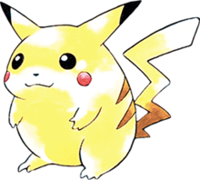

KU Leuven, Flanders, Belgium
Master of Science - MSc, Statistics and Data Science (2022 - Present)
Science@Leuven Scholar
MSc Thesis: Peak learning for denoising Mass Spectrometry Imaging data
Bilkent University, Ankara, Turkey
Bachelor of Science - BSc, Molecular Biology and Genetics, 2018 - 2022
Honour: Summa cum laude - cGPA: 3.79
Hacettepe University, Ankara, Turkey
Doctor of Medicine - MD, Medicine, 2016 - 2018
Dropped Out
Graduate Researcher - NERF - Gonçcalves Lab - 2023
Application of machine learning methods and biophysically realistic network modelling to derive mechanistic insights about the pyloric network in response to perturbations.
Undergradaute Researcher - Bilkent University - Konu Lab - 2022
Building GUI with R Shiny for High-throughput Analysis of Measured Sequential Images application
Undergraduate Researcher - Bilkent University - Kafaligonul Lab - 2021 - 2022
Exploratory Analysis of Zebrafish behavior data by applying different Linear Models
Tutor - Bilkent University - CS Department - 2021 Fall
Tutored, guided students and answered questions at CS115 - ’Introduction to Programming in Python’ course laboratory sessions.
Undergradaute Researcher - NERF - Bonin Lab - 2021 Summer
Research the effects of water deprivation, size stimulus, and longitudinal imaging on retinotopy.
• Performed skull Clearing Surgeries and post-surgery care.
• Did wide-field Ca++ imaging and analyzed the images.
• Prepared the pipeline for image analysis for further research
Student Intern - NERF - Bonin Lab - 2020 Summer
Did mice handling, post-surgery care, and behavioral training
Student Intern - Bogazici University - Fuss Lab - 2019 Summer
Handled and crossed Drosophila, performed dissection and IHC.
KU Leuven - Science@Leuven Scholarship - 2022 - Present
Erasmus+ Student Mobility for Traineeships Program - 2021
FELASA B Certificate - KU Leuven, Belgium - 2020
Scientific Research Council of Turkey - Undergraduate Scholarship - 2020 - 2022
Bilkent University - Comprehensive Undergraduate Scholarship - 2018 - 2022
Tan College - High School Full Scholarship - 2012 - 2016
Positions:
• Vice President, Bilkent Genetics Society - 2019 - 2020
Bilkent University
• Head of International Career, Scientific Research Society 2017 - 2018
Hacettepe University
• Volunteer, Turkish Foundation for the Protection of Nature 2014 - 2022
Activities:
• Co-organiser, ’Horizons in Molecular Biology and Genetics’ and ’Neuroscience
Days’ at Bilkent University.
• Organiser, ’Medical Residency in the US and Germany’ conferences at Hacettepe
University.
Sports:
• Basketball, played at high school team and amateur club (1 Bronze,1 Silver, 4
Gold medals).
• Ice Hockey, team member of Hacettepe University Ice Hockey team, Ice Deers